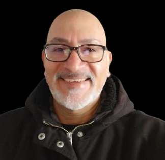

Alberto Villanueva | WWD 130
Hi, my name is Alberto Villanueva, I am from Puerto Ordaz Venezuela, but now I live in Panguipulli, southern Chile. I love learning new things, reading, listening to music, eating icecreams and jogging. Currently I work for a local construction company with a 30 years background building electrical substations and transmission lines, developing the possition of Programmer and Project Progress Controller. I am also a BYU Idaho student,where I am pursuing a Bhachelor´s Degree in Software Development. I am married, father of two lovely daughters and a charming French Poddle dog.